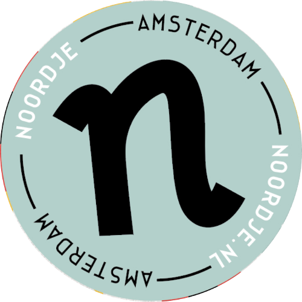

Dit project wordt mede mogelijk gemaakt door de volgende fondsen,
partners en samenwerkingsorganisaties:

Wij willen graag al onze Voordekunst-supporters bedanken voor het
mede mogelijk maken van de productie van Het Onderwater Theater.
Een speciaal bedankje gaat uit naar onze associate producer en
grootste vriend van de film; Marianne Boer, evenals Dominic Mulder,
Fietje en Peter Frank, Iris van Orden, Jacqueline Beekman, Veronica
van Dam, Freek van Arkel, Rei Kakiuchi, Soupenzo, Paul Hoekman,
Frits Hoekman, Nathan Favot en Laura Grimm voor hun genereuze steun.
Ook willen wij de volgende supporters hartelijk bedanken: Hans Grimm,
Marina Sakki, Lauren Squires, Livia Spies, Ezra van der Schaaf,
Cami & Kim Peuling, Nikolaos van Dam, Floris Mast, Wilfred van
Dongen van the Black Cat Theatre, Jurriaan Esmeijer, A & J de Jong,
Sandra Jansen, Tomoko Hasuwa en Fidel Kamiel Siebert.